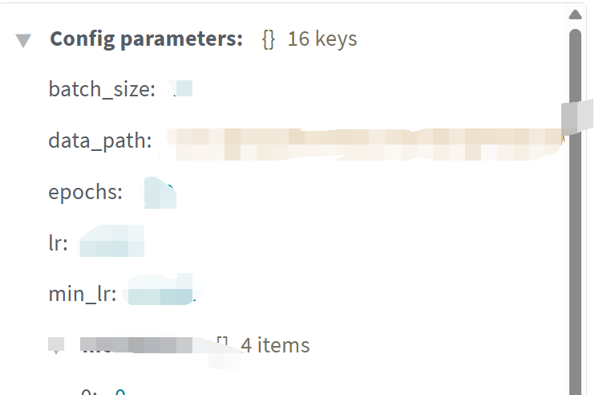
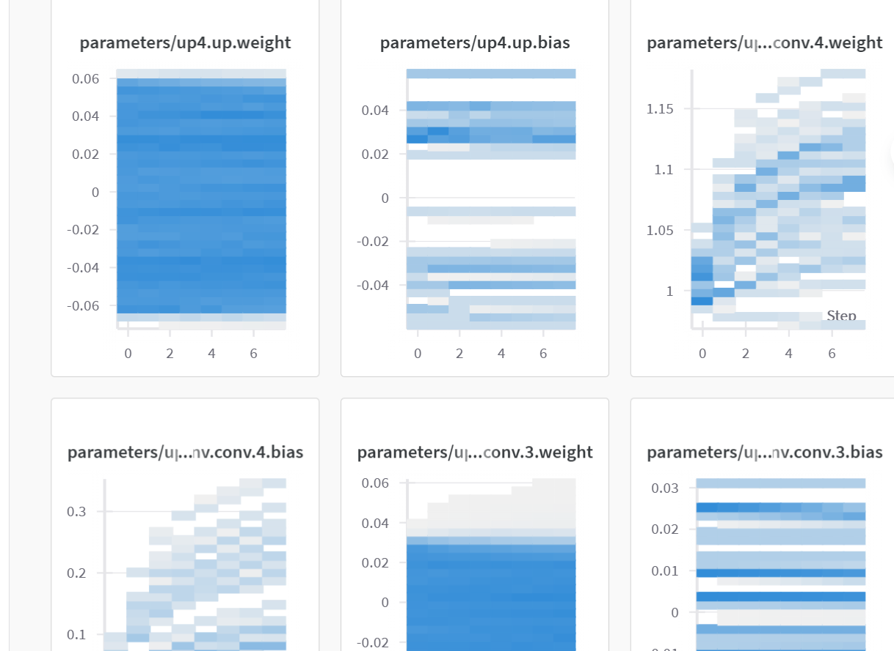
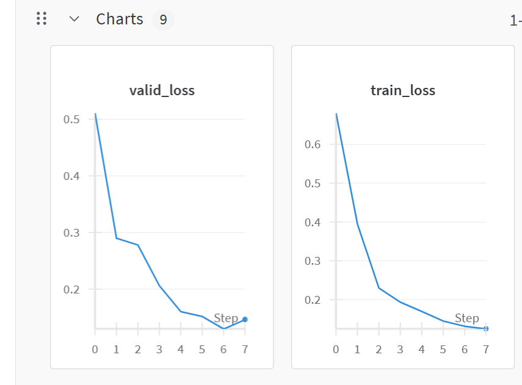

wandb是一个机器/深度学习可视化监督工具。
它将实验的运行内容、GPU运行状况同步到网络平台，可随时监察运行情况。
本文将介绍在Python（Pytorch）的环境下wandb的使用方法。
深度学习实验的官方文档
这个平台既可以给科研工作者提供监督实验进度的工具，也可以为开发者提供监督LLM软件开发的可视化工具。
一、安装
注册账号
需要在该网站注册一个账号，每个账号对应一个单独的API，这在后续项目与账号链接时使用。
API可以在项目创建的时候找到，或者在网站点击头像，列表中找到API key获得代码。
账号注册时需要填写组织。学生填写学校即可。
导入wandb
- 在自己的环境中命令行安装并绑定API：
输入APIkey：
将网站上的api key粘贴其中。
输入时命令行不会显示输入情况。回车后显示账号名称则表示连接成功。
如果不想上传数据到线上，可以使用离线模式或者完全禁用wandb，稍后讲解。
- 训练代码（如：
train.py）的顶部导入wandb:
二、使用方法
初始化项目
基本用法，可直接放在代码的顶端或者入口处进行初始化，这里记录的是项目本次运行的基本信息：
1
2
3
4
5
6
7
8
9
10
11
| import wandb
wandb.init(
project="你的项目名",
name="实验名称",
config={
"learning_rate": 0.001,
"batch_size": 16,
"epochs": 50
}
)
|
如果像我一样使用了argparse来使用控制台管理参数，可以用下面的方法。
例，实验的设置均保存在最后的args中：
1
2
3
4
5
6
7
8
9
10
| import argparse
parser = argparse.ArgumentParser(description="超参数设置")
parser.add_argument('--epochs', type=int, default=10, help='训练轮数')
parser.add_argument('--lr', type=float, default=0.001, help='学习率')
parser.add_argument('--batch_size', type=int, default=32, help='批大小')
args = parser.parse_args()
print(args.epochs, args.lr, args.batch_size)
|
1
2
3
4
5
| wandb.init(
project="My-wonderful-project",
name=f"{args.model}_{'_'.join(map(str, args.modalities))}",
config=vars(args),
)
|

若不想讲数据上传到线上，离线模式：
1
| wandb.init(mode="offline")
|
禁用wandb
1
| wandb.init(mode="disabled")
|
记录模型结构
在代码中模型的定义之后：
1
2
| model = 你的模型
wandb.watch(model, log="all", log_freq=100)
|
可以查看模型的每层权重变化。

记录每个epoch或者step后的指标
1
2
3
4
5
6
7
| wandb.log({
"epoch": e + 1,
"train_loss": train_loss,
"val_loss": val_loss,
"val_accuracy": val_acc,
"learning_rate": current_lr
}, step=epoch)
|

图像记录
1
2
3
4
5
6
7
8
9
10
11
| import numpy as np
import wandb
wandb.log({
"prediction_example": [
wandb.Image(image, caption="Input"),
wandb.Image(mask, caption="Ground Truth"),
wandb.Image(prediction, caption="Prediction")
]
})
|
清理调试实验（可选）
不想保留某次实验，在命令行：
1
2
| wandb sync --clean
wandb disabled
|
或者在代码运行的时候init的地方:
1
| wandb.init(mode="disabled")
|
在程序结尾关闭 wandb（可选）